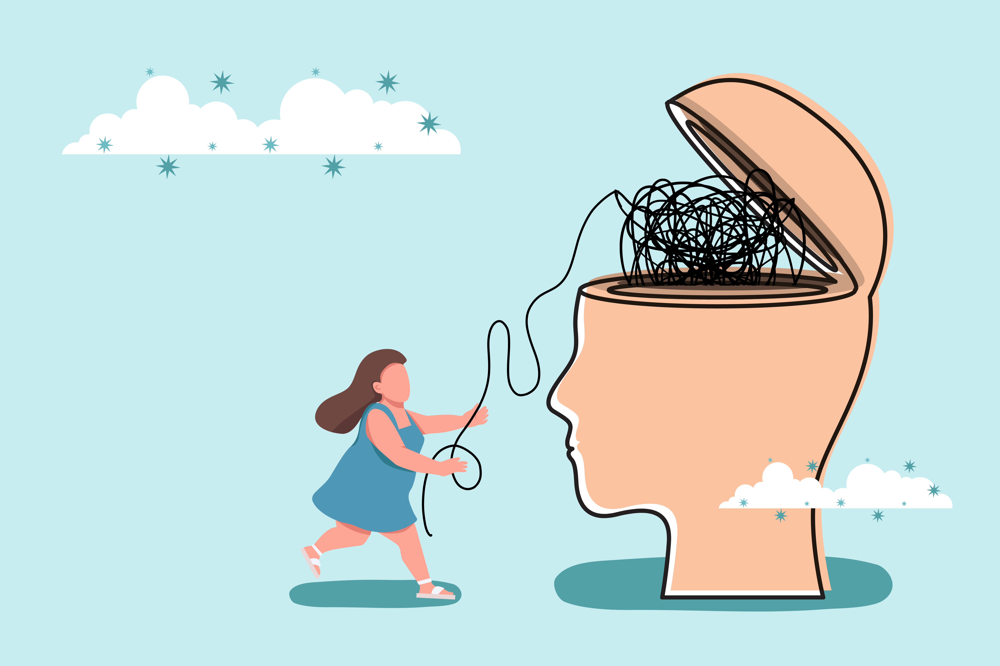

Pesquisa, suporte terapêutico e educacional e ações afirmativas reunidos para
ampliar autonomia, bem-estar e participação na vida, no trabalho e nas relações.
23 anos de experiência construindo caminhos de autonomia, regulação sensorial
e qualidade de vida para pessoas neurodivergentes
Especializada em adultos neurodivergentes
Fundadora da TRIBO Neuro Diversa
Criadora da Jornada: Mentoria em TO
Sobre a TRIBO
Suporte para pessoas autistas atingirem seu máximo potencial
A TRIBO nasceu para transformar a vida de pessoas neurodivergentes com
cuidado especializado, linguagem acessível e estratégias possíveis para a
vida real.
Unimos prática clínica, educação e pesquisa para criar soluções inclusivas e
sustentáveis, respeitando necessidades sensoriais, emocionais e funcionais em
cada etapa da jornada.

01
Missão
Transformar a vida de pessoas neurodivergentes por meio de pesquisa, suporte terapêutico e educacional e ações afirmativas.
02
Visão
Ser referência em neurodiversidade, ampliando autonomia, bem-estar e participação no trabalho e na vida.
03
Valores
Inovação, inclusão e empoderamento guiados por colaboração e decisões baseadas em pesquisa.
Liz Amaral
Terapeuta Ocupacional
23 anos de experiência construindo caminhos de autonomia, regulação sensorial
e qualidade de vida para pessoas neurodivergentes.
Terapeuta Ocupacional especializada em adultos neurodivergentes
Criadora de estratégias práticas para adultos autistas, TDAH e altas habilidades, com foco em autonomia, organização da vida cotidiana e gestão de bioenergia.
Fundadora da TRIBO Neuro Diversa
Idealizadora de um ecossistema de suporte ND que integra comunidade, educação, ferramentas práticas e acompanhamento contínuo para adultos neurodivergentes.
Desenvolvedora da Jornada: Mentoria em TO
Criadora de uma jornada estruturada que ajuda pessoas neurodivergentes a navegarem no mundo com mais funcionalidade, menos exaustão e mais consciência sobre seu próprio funcionamento.
Pesquisadora e desenvolvedora do Modelo dos 5 Corpos
Estruturou um modelo integrativo que conecta corpo físico, mental, emocional, espiritual e autêntico para auxiliar na compreensão e organização da experiência neurodivergente.
Voz ativa na construção de uma abordagem ND mais humana e estratégica
Defende uma neurodiversidade baseada em autonomia, desenvolvimento de habilidades, acolhimento, colaboração e estratégias reais para viver no mundo sem promessas irreais ou romantizações.
O que a Tribo Raiz Neurodiversa (TRND) oferece
Suporte especializado para transformar desafios em rotas práticas
Grupos de Bate-Papo TRND
Espaços de educação, socialização e acolhimento para adultos autistas e familiares, com foco na troca de experiências e suporte emocional.
Encontros Terapêuticos TRND
Sessões individuais e em grupo, com foco em estratégias sensoriais e manejo de crises, conduzidas por especialistas.
Webinários, Cursos e E-books TRND
Conteúdos educativos sobre gestão de ansiedade, inclusão no trabalho, seletividade alimentar, habilidades sociais e prevenção de Burnout Autista.
Atendimentos Individualizados
Planos de ação personalizados para gerenciar desafios sensoriais e emocionais, respeitando a autenticidade do indivíduo.
Ferramentas Terapêuticas
Produtos práticos, como planners sensoriais e kits de autocuidado, disponíveis na loja online.
Jornada de Mentoria em TO para Autistas
Acompanhamento estruturado e acessível, com estratégias aplicáveis à vida diária.
Pesquisa em Terapia Ocupacional e Neurodivergência
Pesquisa para aprofundar particularidades da neurodivergência, aprimorar estratégias de tratamento e apoiar pesquisadores de outras áreas.
Nossa mentoria
Jornada: Mentoria em TO para autistas aprenderem a lidar com Burnout Autista mesmo precisando se manter trabalhando
Um processo contínuo de Terapia Ocupacional para reduzir sobrecarga, organizar
energia, criar limites e sustentar trabalho, estudos e relações sem auto-violência.